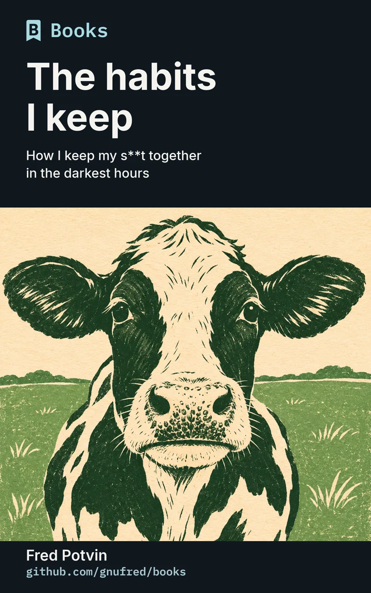

Health and habits
The habits I keep
How I keep my s**t together in the darkest hours
to read
Hearing that AI could take over governments and seeing my fellow IT engineers lose their jobs really freaked me out. Breathing and moving helped me get myself together. Now I want to help you too.
Download EPUB